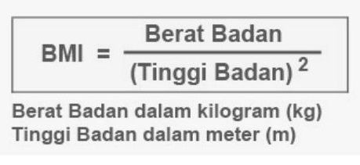

Selamat datang di web kalkulator BMI
Mari cek apakah berat badanmu ideal!
Apa itu BMI
BMI adalah singkatan dari Body Mass Index atau dalam bahasa Indonesia disebut Indeks Massa Tubuh (IMT) adalah ukuran sederhana yang digunakan untuk menilai status gizi seseorang, dengan mempertimbangkan berat badan dan tinggi badan.
Mengapa BMI penting
BMI (Body Mass Index) penting karena merupakan indikator sederhana dan mudah dihitung untuk menilai status berat badan seseorang, apakah termasuk normal, kurang, atau berlebih. BMI juga dapat memberikan gambaran awal tentang risiko seseorang terkena berbagai penyakit terkait berat badan seperti penyakit jantung, diabetes tipe 2, dan tekanan darah tinggi.
Bagaimana cara menghitung BMI
Untuk menghitung BMI kita bisa menggunakan rumus dibawah:
Skor BMI
Untuk mengetahui apakah hasil BMI kita normal atau tidak silahkan baca tabel dibawah ini:
| BMI | Interpretasi |
|---|---|
| <18.5 | Underweight |
| 18.5 - 24.9 | Normal/Ideal |
| 25 - 29.9 | Overweight |
| >30 | Obesitas |
Contoh dan cara menghitungnya
Untuk contoh dan cara menghitung BMI silahkan tonton video dibawah ini:
Kekurangan BMI
Meskipun BMI adalah alat yang berguna untuk skrining awal, penting untuk diingat bahwa BMI memiliki beberapa keterbatasan, seperti tidak dapat membedakan antara massa otot dan lemak tubuh, serta tidak mempertimbangkan faktor lain seperti usia, jenis kelamin, dan tingkat aktivitas fisik. Oleh karena itu, BMI sebaiknya tidak digunakan sebagai satu-satunya indikator kesehatan, tetapi sebagai informasi tambahan yang perlu dipertimbangkan bersama dengan faktor lain.
Obesitas membawa berbagai risiko kesehatan yang serius. Penyakit jantung, stroke, diabetes tipe 2, kanker tertentu, masalah pernapasan, dan osteoarthritis adalah beberapa contohnya. Selain itu, obesitas juga dapat memicu masalah kesehatan mental seperti depresi dan kecemasan
Untuk mengetahui lebih jauh mengenai obesitas silahkan buka pdf ini:
PDF